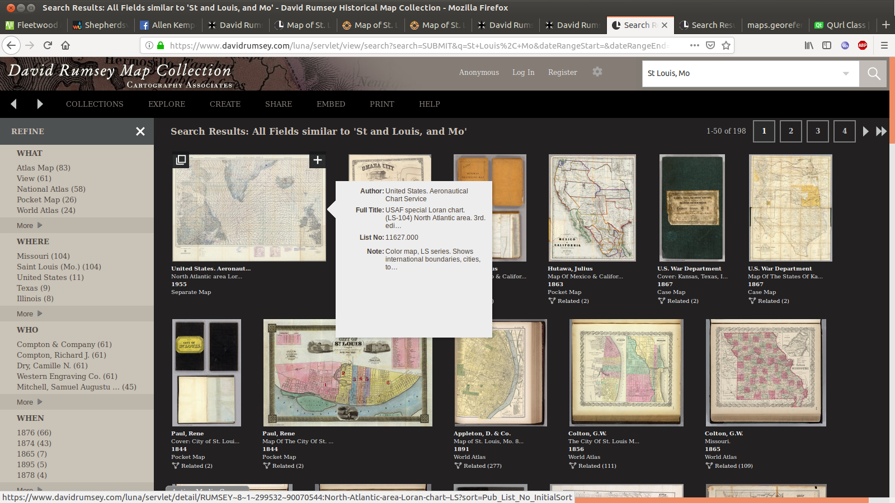
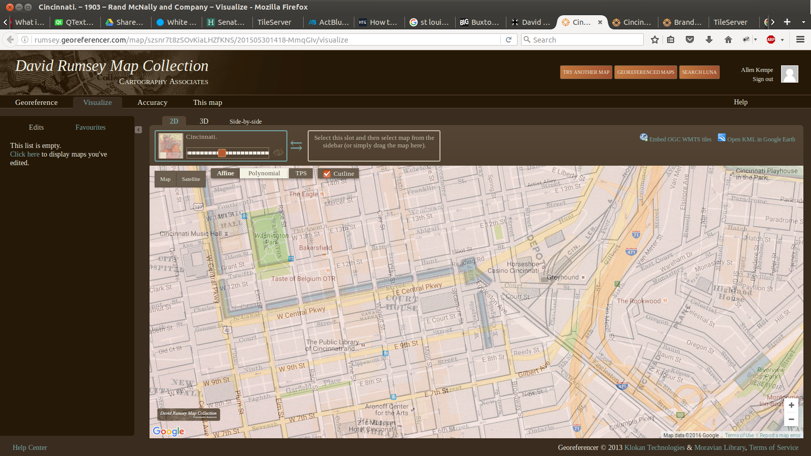
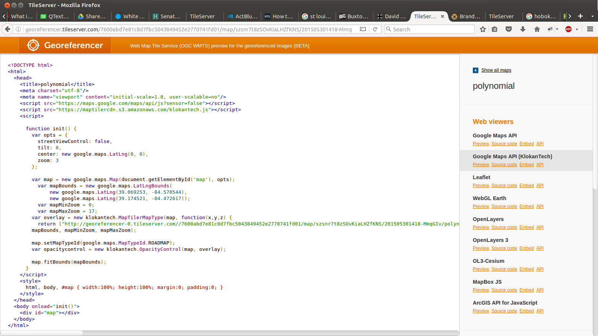
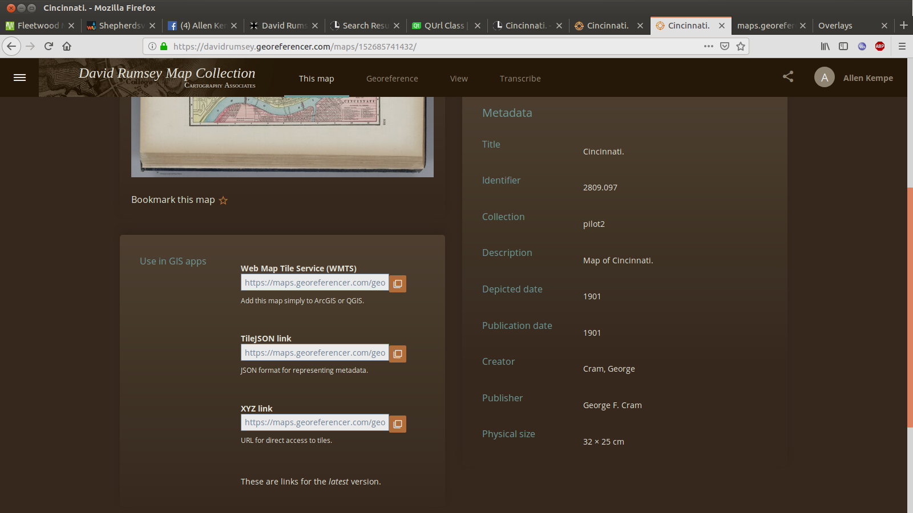
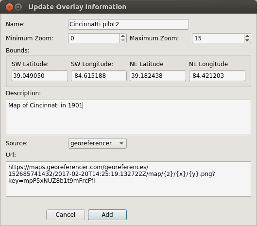

Now in the bar at the top, click on "This map". On the page that is displayed, there is a frame titled "Use in GIS apps" and click on "Get links".


Before we leave this page, we need to determine another piece of information. Copy the text in "Web Map Tile Service (WMTS) to the clipboard.
Open a new browser window or tab and paste the value into the browser's URL entry. The browser should then display a lot of XML
data. The part we are interested in looks like this:
<ows:LowerCorner>-84.615188 39.049050</ows:LowerCorner>
<ows:UpperCorner>-84.421203 39.182438</ows:UpperCorner>
These pairs of numbers are the longitude and latitude of the bounding rectangle. The "LowerCorner" is the SW corner and the
"UpperCorner" is the NE corner.
var mapBounds = new google.maps.LatLngBounds(
new google.maps.LatLng(39.069253, -84.570544),
new google.maps.LatLng(39.174521, -84.472617));
return ["http://georeferencer-0.tileserver.com//7600abd7e81c8d7fbc5043849452e2770741fd01/map/szsnr7t8zSOvKiaLHZfKNS/201505301418-MmqGIv/polynomial/{z}/{x}/{y}.png","http://georeferencer-1.tileserver.com//7600abd7e81c8d7fbc5043849452e2770741fd01/map/szsnr7t8zSOvKiaLHZfKNS/201505301418-MmqGIv/polynomial/{z}/{x}/{y}.png","http://georeferencer-2.tileserver.com//7600abd7e81c8d7fbc5043849452e2770741fd01/map/szsnr7t8zSOvKiaLHZfKNS/201505301418-MmqGIv/polynomial/{z}/{x}/{y}.png","http://georeferencer-3.tileserver.com//7600abd7e81c8d7fbc5043849452e2770741fd01/map/szsnr7t8zSOvKiaLHZfKNS/201505301418-MmqGIv/polynomial/{z}/{x}/{y}.png"][(x+y)%4].replace('{z}',z).replace('{x}',x).replace('{y}',y); },
Once you have installed the web server, you must create a directory "map_tiles" in the web server's root directory, "/var/www/html" into this directory, copy the file "mbtiles.php" from the ../mapper_app/Resources" directory. This is the code that will actually serve the map tiles.
Once you have installed the mbtiles files in the "map_tiles"directory, enter this command in your web browser: "http://localhost/map_tiles/mbtiles.php"
This should result in a display like this:
St_Louis_1895|St Louis area in 1895|10|16|65|-90.2842,38.5711,-90.1617,38.6911|
St_Louis_1903|St Louis area at the time of the 1904 Worlds Fair|10|16|65|-90.3291,38.5256,-90.1025,38.7623|
St_Louis_historical_topo|St Louis area historical topo maps: Clayton 1933, Granite City 1940, St Charles 1927, Jefferson Barracks 1933, Columbia bottoms 1935, Creve Coeur 1933, Florissant 1935, Kirkwood 1940|8|17|65|-90.50056094676738,38.48416018141663,-90.12500117195425,39.00011566093108|
This is the metadata that Mapper will use to determine what maps are available and their properties. h